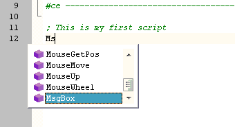

Getting started with AutoIt3 using the SciTE editor
Open an AutoIt3 script:
Open the Windows Explorer and go to the AutoIt3 examples folder (C:\Program Files\AutoIt3\Examples if you did a standard install) and open msgbox.au3 by double clicking it, or by right clicking it and selecting
"Edit Script". SciTE will open and show the script. As you can see, all the different word types have their own colour for better readability. To run this script, just press F5 - the
script will start and display a messagebox:
Starting a New AutoIt3 script:
To start a new script, go to Windows Explorer, right click in a folder and select <New - AutoIt v3 Script> and name the file as you wish (do not forget the .au3 extension). Next doubleclick this
new file and SciTE will open:
Let us create the following simple script:
|
; This is my first script
MsgBox(0, "My First Script!", "Hello World!")
|
You will see that when you type the editor will suggest keywords or functions. you can either select one or just keep on typing. In this example you type Ms and
hit Enter or Tab to select MsgBox:

Then type ( and a CallTip will be shown which assists you with the parameters - the current parameter is highlighted:
Run an AutoIt3 script:
Now just type the rest of the line: 0, "My First Script!", "Hello World!")
When you have finished, press F5 which will Run this program for you:
Run Errors:
When AutoIt3 detects errors in your script, it will show the Error in the lower Output pane of the SciTE editor. If you double-click the red error line in the output window SciTE will jump to the line in the code that contains
the error:
Syntax Check or Run the script
Pressing Ctrl-F5 will run Tylo's AutoIt3 syntax checker, which will syntax check the script.
Pressing just F5 will run Au3Check and then, if no errors/warnings are found, run AutoIt3.exe to run the script.
Again if any errors are found just double click them and SciTE will jump to the relevant line.
Compile an AutoIt3 script:
You can create an executable (.exe) of your script by pressing F7. SciTE will run the Aut2Exe program and compile the script.
You can also press Ctrl-F7 to "Compile your script with options" and change compile options such as the compression
value and the icon to be used. You can also change the program resource information like Programversion, Legalcopyright and additional fields. See here for more
info.
Anytime you want to learn more about an AutoIt Function or Keyword just place the cursor over it and press F1 - the AutoIt Helpfile will open at the correct page.